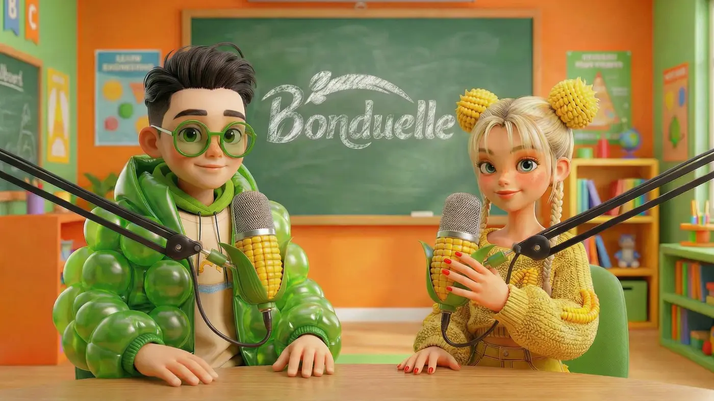
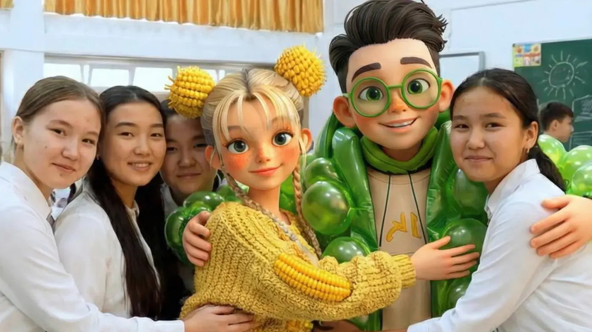
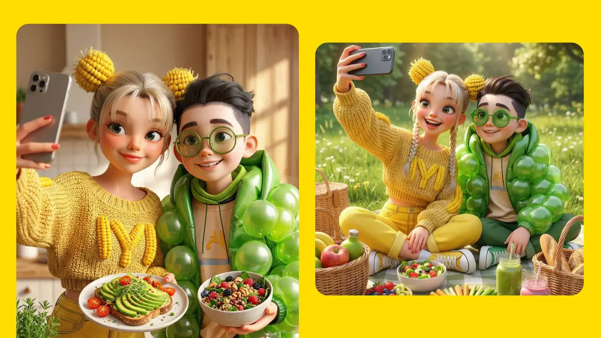

Готовый элективный курс для старшеклассников
Программу о здоровом питании собрали нутрициологи и методисты. Школе не нужен дополнительный бюджет, а учитель получает готовые материалы и интерактивные презентации.
Bonduelle · AI characters · Education
Элективный курс для старшеклассников о здоровом питании — с AI-бадди, которые разговаривают с подростками на одном языке.
О проекте
Курс разработан нутрициологами и методистами и готов к использованию учителем без дополнительного бюджета.
Лил Бин и Бэйби Корн становятся AI-бадди проекта: разговаривают с подростками на одном языке, работают в учебных материалах, медиа и соцсетях.
CASE BREAKDOWN / EDUCATIONAL CAMPAIGN
Программу о здоровом питании собрали нутрициологи и методисты. Школе не нужен дополнительный бюджет, а учитель получает готовые материалы и интерактивные презентации.
AI-бадди работают в уроках, презентациях и учебных материалах. Они помогают объяснять тему без назидательного тона и превращают образовательный контент в узнаваемую бренд-вселенную.
Поддержка продолжилась в медиа и социальных сетях, а на сайте появился простой гайд, с помощью которого семьи могли закреплять полезные привычки дома.
Я участвовала в создании общей креативной системы проекта и отвечала за арт-дирекшн AI-персонажей, их характер, визуальный язык и применение в разных форматах.


